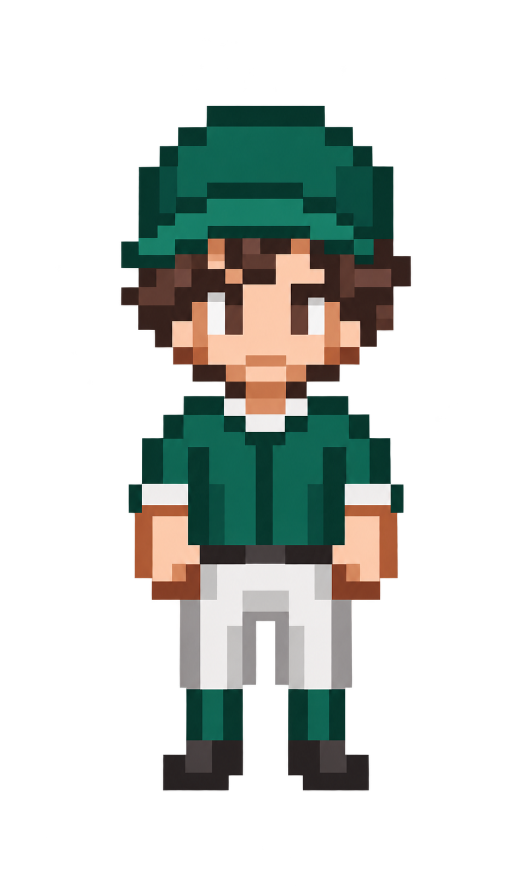

해체해라 · 기준 캐릭터 적용 v02
어제 그 선수에게, 다른 폼
초록 모자·갈색 머리·큰 도트 눈을 유지한 타격 6종 · 달리기 6종입니다.

기준 캐릭터외형은 그대로
타격폼 후보
카드를 선택하면 아래에서 분할동작을 크게 볼 수 있습니다.
B01
기본 균형
준비
눈여겨볼 부분
같이 검토할 성격 후보
다른 성격에도 사용할 수 있습니다. 아래 후보는 제안이며 확정 조합이 아닙니다.
작은 주자 크기 비교
해체해라 · 기준 캐릭터 적용 v02
초록 모자·갈색 머리·큰 도트 눈을 유지한 타격 6종 · 달리기 6종입니다.

기준 캐릭터카드를 선택하면 아래에서 분할동작을 크게 볼 수 있습니다.
B01
다른 성격에도 사용할 수 있습니다. 아래 후보는 제안이며 확정 조합이 아닙니다.